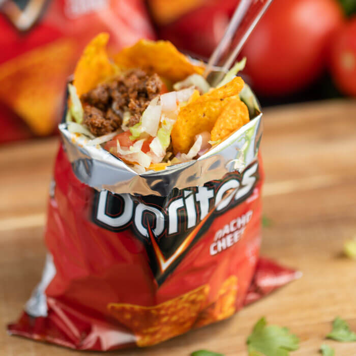

Walking Taco

Description
Are Doritos starting to get boring for you? Craving some Doritos Locos Tacos? Well, this recipe could be for you. No tacos? No plates? No problem! All you need is bag of Doritos and a fork to eat this taco on the go with minimal spillage.
Ingredients
- 1 pound ground beef
- 1 ounce package taco seasoning mix
- 6 (1.75 ounce) packages nacho cheese flavored corn chips, like Doritos
- 8 ounces package taco cheese blend
- 2 tomatoes, diced
- 1 cup shredded lettuce
- 8 ounces sour cream